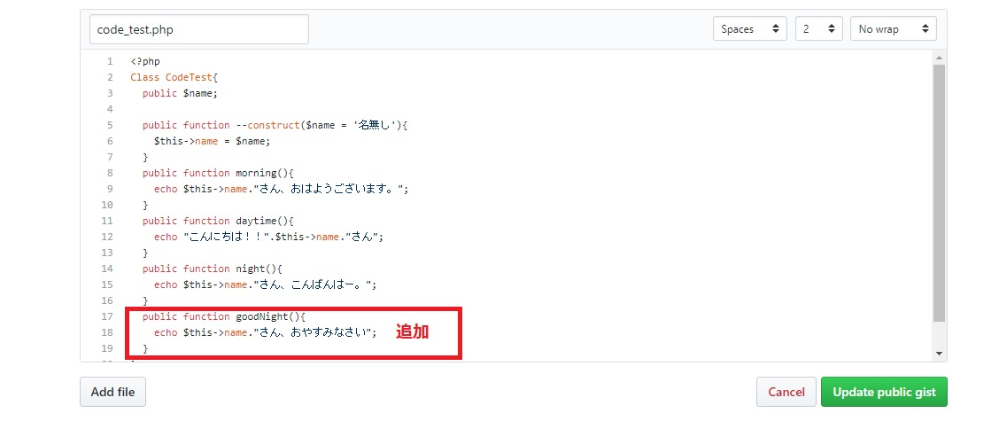

Gistとは
GistとはGitHubの提供している断片コードの共有サービスのこと。
GistもGitHubと同様リモートリポジトリである。
Gistの特徴
- コードの一部（断片）を管理することができる
- 無料枠でも非公開にできる
- GitHubにアカウントが無くても自分のソースや文書を公開できる
- ブログ等に簡単に張り付けることができる
- gitコマンドで手元にcloneできる
- Forkができる
- 1つのエントリーに複数のファイルを置くことができる
- .gitignoreはローカルだけに置く
- Github Flavored Markdown(GFM)で書かれたファイルはHTMLに変換されて表示される
コードの一部（断片）を管理することができる
複数ファイルをまとめて管理しているリポジトリとは違い、1ファイルのみ,1クラスのみ,コードの位置部分のみなどをバージョン管理できる。
そのため、メモや短いコードをバージョン管理しながら公開するのに便利である。
無料枠でも非公開にできる
GitHubでは無料枠ではリポジトリを非公開にすることが出来ない。
しかし、Gistでは非公開にすることができる。
※非公開と言っても、URLが分かれば誰でもアクセスが可能なことには注意。（但し、URLは推測されにくい。）
GitHubにアカウントが無くても自分のソースや文書を公開できる
ブログ等に簡単に張り付けることができる
通常のバージョン管理とは違いGistで管理しているコードは、ブログ等の他のサイトに公開することが出来る。
gitコマンドで手元にcloneできる
https://gist.github.com/4952e29f583fb0398380f929a2c2a5ac.git Gist/ Gistという名のディレクトリが作られその中にcode_test.phpなどの いくつかのファイルと.git/ディレクトリがcloneされる。
Forkができる
Forkでも他の人のコードを自分の所にコピーができる。
1つのエントリーに複数のファイルを置くことができる
複数のファイルの表示順序はアルファベット順
.gitignoreはローカルだけに置く
Gistに.gitignoreを置くと見せたいファイルよりアルファベット順で前に来てしまい.gitignoreが前面に出てきてしまう。
Gist用の.gitignoreはローカルにだけ置くこと。
その場合.gitignoreの中に.gitignoreも書く。
Github Flavored Markdown(GFM)で書かれたファイルはHTMLに変換されて表示される
意味のあるファイル名を持ったGFMファイルが先頭に置かれてうまくHTML表示されるにはディレクトリ内のすべてのファイル名を工夫する必要がある。
長くなりましたが、次がいよいよ使い方の紹介です。
Gistの使い方
Gistを使ってソースコードを保存してみる
gist(https://gist.github.com/)にアクセスしてください。

- Gist description
- Filename including extension...
- Indent mode
- Indent size
- コードの入力欄
- Add file
- Create secret Gist
- Create public Gist
このコードの説明を書く。
ファイル名を入力する。
インデントの指定を[スペース/タブ]どちらにするか選択
タブで挿入されるスペース数
入力欄が一つ追加される
非公開用のGistを作成する
公開用で Gistを作成する
今回はこんな感じで記入しました。今回は公開用で保存します。
以上で保存は完了しました。
作成されると以下のように表示されます。
Gistのバージョン管理は？
どのようにバージョン管理ができるのかテストする。
上記のソースコードを編集する。上メニューにある「Edit (編集)」をクリック。
ソースコードに新しくメソッド関数を追加して、保存します。
この場合は、「おやすみなさい関数」を追加してます。
上メニューの「Revisions」をクリック。
そうすると、オリジナルファイルとの差分が表示される。
※「View gist @*****」をクリックするとそれぞれのバージョンのソースコードを確認することができます。
ソースコードをブログで公開
ソースコードをGistからブログに貼付けてみる。
上の「Embed this gist」にあるスクリプトをコピーして、ブログに貼付ける。
下記のようなコードを貼付けることになる。
<script src="https://gist.github.com/yuoishi/4952e29f583fb0398380f929a2c2a5ac.js"></script>
張り付けた結果
このようにgistから直接ソースコードを貼付けることができる。